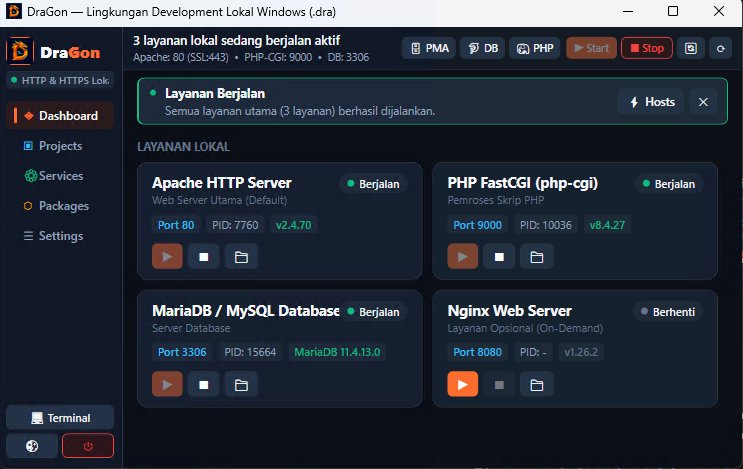

Lingkungan Development Web Lokal Modern, Cepat & Ringan
DraGon dirancang sebagai suksesor modern untuk Laragon dan XAMPP di Windows 10 & 11.
Mengintegrasikan Apache HTTP & Nginx, Multi-Versi PHP (8.4, 8.3 LTS, 8.2), MariaDB 11.4 LTS, SSL otomatis https://*.dra, Project Starter instan (Laravel, WordPress, Git Clone), serta Terminal cerdas dalam satu antarmuka desktop yang elegan.

Semua Kebutuhan Web Developer dalam 1 Aplikasi
Dirancang dari awal untuk kecepatan, kestabilan, dan kemudahan alur kerja harian Anda.
Multi-Versi PHP Berdampingan
Beralih versi PHP aktif secara instan hanya dengan 1 klik. Mendukung PHP 8.4 terbaru, PHP 8.3 LTS (aktif), 8.2, dan 8.1 tanpa bentrok path sistem.
MariaDB 11.4 LTS & MySQL
Server database SQL lokal yang cepat, aman, dan siap pakai. Dilengkapi tombol inisialisasi data otomatis (*Init Data*) dan pintasan ke phpMyAdmin serta HeidiSQL.
Web Server Ganda: Apache & Nginx
Bebas memilih web server utama antara Apache HTTP Server (dengan dukungan mod_rewrite & .htaccess) atau Nginx berkinerja tinggi.
SSL Lokal Otomatis (*.dra)
Pemetaan otomatis folder www ke domain https://<nama>.dra. Sertifikat Root CA terpasang langsung ke Windows agar browser selalu aman (*Trusted SSL*).
Pembuatan Proyek Super Cepat
Ketik nama langsung jadi folder proyek. Mendukung starter kit resmi Laravel (Composer), unduh otomatis WordPress terbaru, maupun Git Clone langsung dari GUI.
Terminal Pintar Terintegrasi
Buka PowerShell atau CMD di folder proyek mana pun dengan PATH runtime (PHP, Composer, Node.js, MariaDB, Git) yang sudah otomatis disuntikkan siap pakai.
Pengaturan Ekstensi PHP Visual
Aktifkan atau nonaktifkan modul PHP (curl, mbstring, pdo_mysql, gd, intl, openssl, xdebug, dll) langsung dengan toggle sakelar tanpa repot mengedit teks php.ini manual.
Ringan, Cepat & Hemat Memori
Dibangun secara native menggunakan WPF .NET 10 Windows. Bebas dari beban Electron yang boros RAM, terbuka seketika dan hemat baterai di laptop.
Mengapa Memilih DraGon?
Lihat perbandingan langsung antara DraGon dengan tool tradisional lainnya.
| Fitur & Kemampuan | 🐉 DraGon (Modern) | Laragon | XAMPP |
|---|---|---|---|
| Arsitektur Aplikasi | Native .NET 10 WPF (Ultra-Cepat & Modern) | Delphi Klasik | Perl / C++ Wrapper |
| VirtualHost Otomatis | Ya, domain https://*.dra instan |
Ya, domain *.test |
Manual via httpd-vhosts.conf |
| Sertifikat SSL / HTTPS Lokal | Otomatis Trusted Root CA (Hijau di Browser) | Perlu konfigurasi manual | Tidak otomatis (Self-Signed Error) |
| Ganti Versi PHP & DB | 1-Klik Switcher + Auto Detect Runtimes | Dropdown klasik | Sangat rumit (Manual copy file) |
| Web Server Support | Apache & Nginx (Tersedia Berdampingan) | Apache / Nginx | Apache saja |
| Project Starter Terintegrasi | Laravel, WordPress, Git Clone, PHP Standar | Quick App wizard | Tidak ada (Manual) |
| Terminal Runtime Auto-Inject | PowerShell & CMD langsung dengan PATH aktif | Cmder bawaan | Tombol Shell sederhana |
Siap Tingkatkan Produktivitas Coding Anda?
Unduh DraGon sekarang secara gratis. Installer mandiri lengkap dengan runtime esensial atau paket portabel siap pakai tanpa instalasi.
Jika muncul jendela "Windows protected your PC" saat pertama kali membuka installer, ini adalah perlindungan standar Windows untuk aplikasi rilis baru. Cukup klik "More info" lalu pilih "Run anyway" (Tetap jalankan).